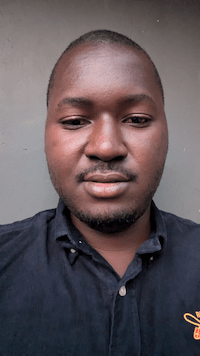

Adeoye Ayodeji Emmanuel | WDD 130

Hello! My name is Adeoye Ayodeji Emmanuel and i am from Osun State, Nigeria. I am excited by the oppurtunity given to me to do learn something i love

Hello! My name is Adeoye Ayodeji Emmanuel and i am from Osun State, Nigeria. I am excited by the oppurtunity given to me to do learn something i love